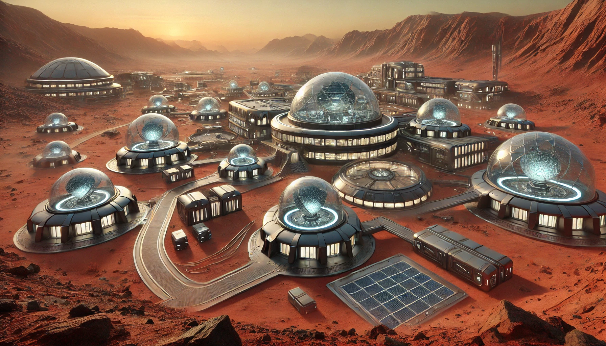
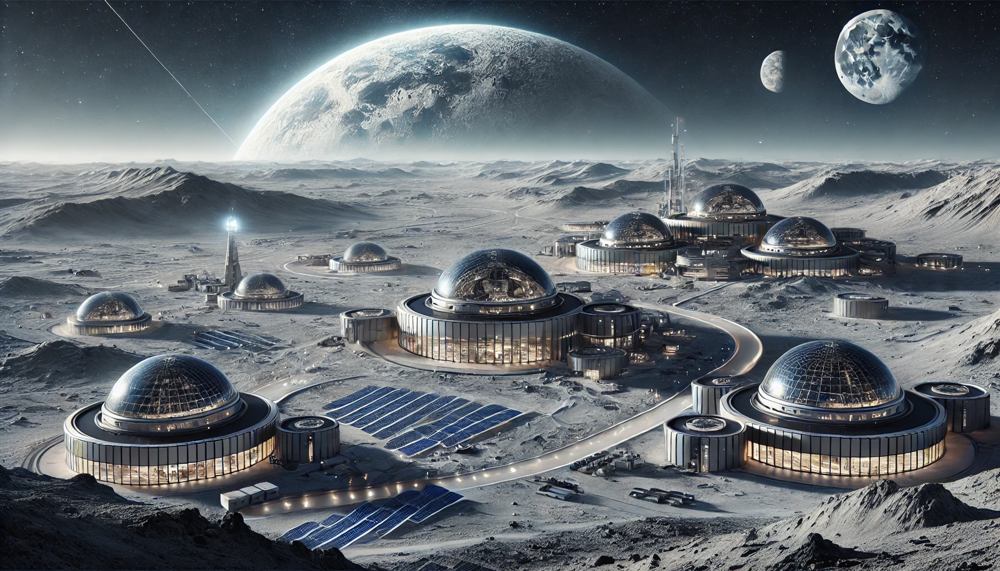

introduction
Since its establishment in 2025, HOUCOB University has been committed to staying at the forefront of higher education and creating an equal and relaxed learning environment; therefore, HCU admits a large number of extraterrestrial students from outer space.
Now, HOUCOB University has become one of the most famous universities in the entire universe. Located in New York City on Earth and boasting branch campuses on both the Moon and Mars, it is a leader in cosmic education, enrolling more extraterrestrial and off-Earth students than any university on Earth.
HOUCOB University's students come from almost all over the world and 133 planets, such as Krypton, the M78 Nebula, Colossus, and others, and the university draws upon the diverse backgrounds of our faculty, staff, and students, ensuring its scholarship and teaching benefit from a wide range of perspectives.
The largest private research university in the US, HCU provides a rigorous, demanding education to more than 65,000 students and undertakes $127 billion in research annually. HCU has a vast network of alumni who have gone on to succeed across professions, from the sciences to the arts and government, throughout the univirse.
Mars Campus
The 21st century requires rigorous, broad, and imaginative educational training. HCU Mars provides extraordinary opportunities for individual exploration and growth, and prepares students to succeed in a truly universe. HOUCOB University's Mars Campus is nestled among the legendary red dunes of Mars, blending state-of-the-art interstellar research facilities with the unique allure of the Martian landscape. The campus architecture masterfully combines cutting-edge space technology with the rugged beauty of the Martian desert, creating a futuristic learning environment that transcends conventional boundaries. At this campus, innovative programs such as Martian Geology, Extraterrestrial Ecology, and Space Navigation are offered, and students can even participate in the annual "Mars Walk Festival," which invites them to explore uncharted territories while embracing a truly interstellar lifestyle. Whether you're passionate about pioneering Mars research or seeking an adventure across the cosmos, the HOUCOB University Mars Campus is your gateway to a universe of new opportunities.
Moon Campus
HCU Moon is Earth's first extraterrestrial university and the second campus in the HOUCOB University cosmic network, founded in 2042.
HCU Moon seeks to cultivate universe-minded graduates through innovative teaching, world-class research, and a commitment to public service.
HCU Moon's student body currently consists of nearly 2,000 undergraduate and graduate students, half of whom hail from Earth, while the remaining half come from over 70 other planets throughout the cosmos. Our faculty—comprised of renowned scholars, innovators, and educators—is recruited from the universe's most prestigious research institutions.